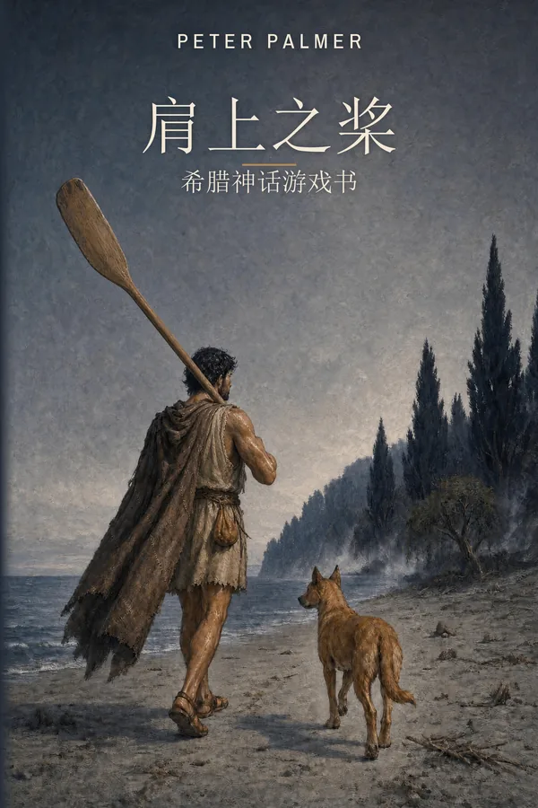
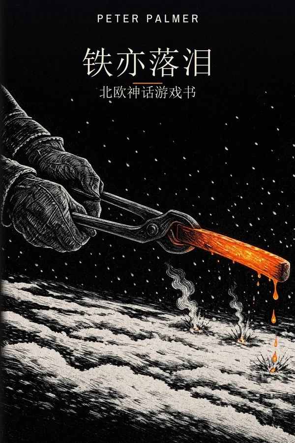
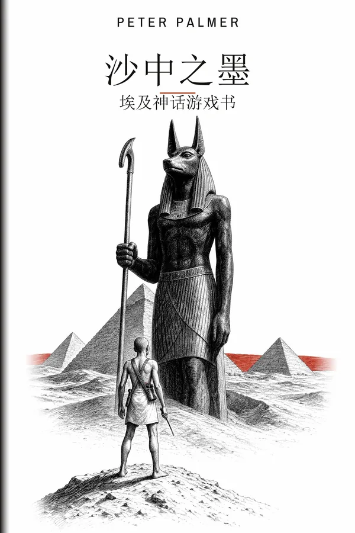

希腊神话 · 10岁以上
肩上之桨
希腊神话游戏书
船桅断裂的那一夜，你紧握船桨，等待巨浪。醒来时，你躺在一片灰色的海滩上，头顶是一片陌生的天空。身边只有一只年轻的红褐色小狗，它似乎知道该往哪里走。而你遇到的每一个人，迟早都想知道你的名字。
你叫安菲阿洛，是欧律罗科斯之子、奥德修斯之孙，你的家族与大海之间还有一笔未了的账。要了结它，你必须在每一步做出选择：走哪条路，相信谁，何时战斗，何时逃跑，以及如何回答考验你的人。
只有一条路能走到最后。
即将推出
 Intrecci di Carta
Intrecci di Carta
岔路冒险
Peter Palmer 著
由你做出选择的故事，每一个错误都要付出代价。从《奥德赛》中的冥府，到九界的诸神黄昏，再到埃及的金字塔。
让孩子放下手机的冒险，在一次次选择中认识希腊、北欧与埃及神话。

希腊神话 · 10岁以上
希腊神话游戏书
船桅断裂的那一夜，你紧握船桨，等待巨浪。醒来时，你躺在一片灰色的海滩上，头顶是一片陌生的天空。身边只有一只年轻的红褐色小狗，它似乎知道该往哪里走。而你遇到的每一个人，迟早都想知道你的名字。
你叫安菲阿洛，是欧律罗科斯之子、奥德修斯之孙，你的家族与大海之间还有一笔未了的账。要了结它，你必须在每一步做出选择：走哪条路，相信谁，何时战斗，何时逃跑，以及如何回答考验你的人。
只有一条路能走到最后。

北欧神话 · 10岁以上
北欧神话游戏书
你见过十六个冬天，在一座村庄的铁匠铺里当学徒，那里是人类世界的尽头，再往外只剩最后一块犁过的田。大家叫你“铁匠铺的巨魔”，因为两个大人都搬不动的铁砧，你一个人就能举起来。把你养大的铁匠，是在淬火锅旁的一只篮子里发现你的，你的脖子上挂着一枚铁环，对人的手指来说太宽了。
后来，一个下雪的夜里，一个独眼老人牵来一匹八条腿的灰马让你钉马掌，临走前问你母亲叫什么名字。几天后来了一个少年，他发誓要在你身上为一位死去的神复仇。他无法被打败，但可以请求一场审判。
你将登上众神之地，穿越巨人的国度，或者下到亡者所在之处，为九界最艰难的一场诉讼寻找证人。
你是凯提尔。记住你的名字。

埃及神话 · 10岁以上
埃及神话游戏书
你十六岁，带着一块书吏的调色板和一把青铜短刀。一天早上，在孟菲斯的集市上，一个赤脚的女孩挣断了人贩子的绳子，跳上一处只有你才知道怎么跳上去的屋顶。你追了上去，从那一刻起，国王的告示也在搜捕你。
要跟着她一路南下，你得读懂没有人教过你的东西：刻在金字塔里的咒语、神庙墙上的符号，还有一卷本不该让你看见的纸草。在埃及，写下的名字会牢牢抓住它的主人。
你是荷里。学会什么可以写下，什么不可以。

关于我们
我们是一群扎根瑞士提契诺州的作家。我们写小说和推理小说、游戏书和童书，也设计桌游和电子游戏。
Intrecci di Carta 是我们的品牌：可读的故事，可玩的故事。
选一张你的牌 →联系方式
无论是一个问题、一个想法，还是一份出版提议。
info@intreccidicarta.com